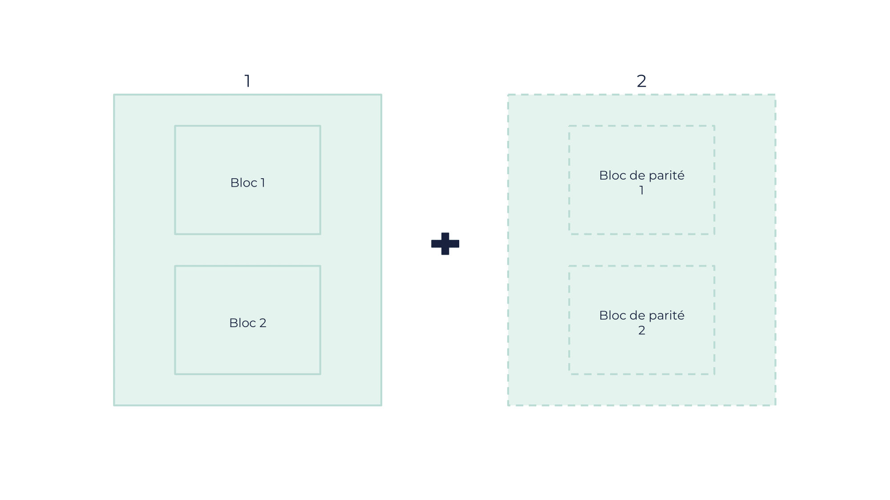
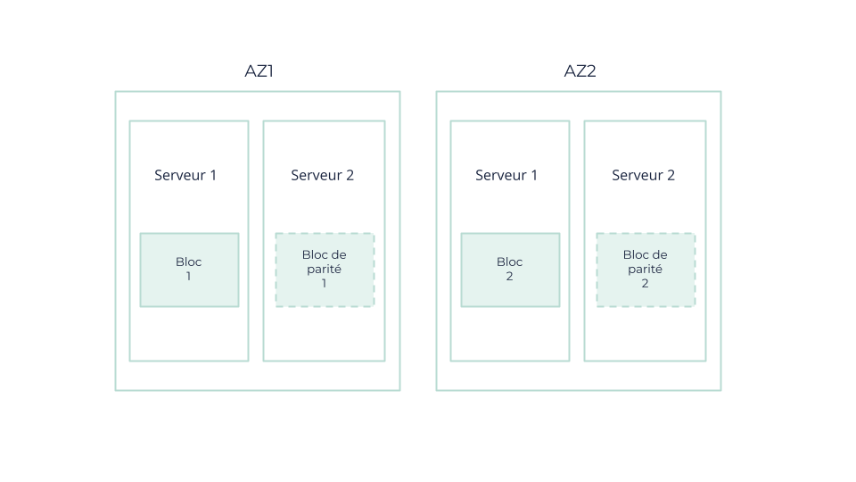
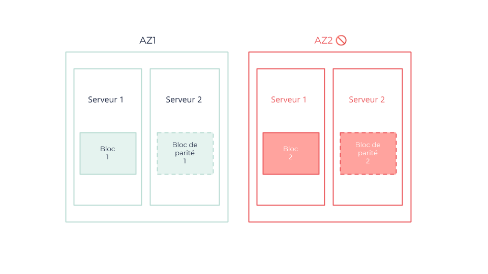
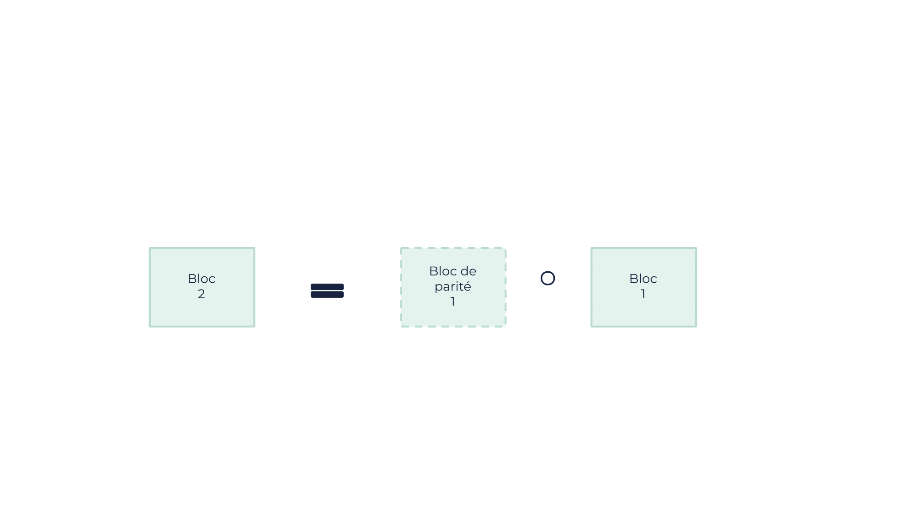

Mécanismes de résilience d’OOS
La solution OUTSCALE Object Storage (OOS) est basée sur deux technologies :
-
Le codage d’effacement (ou Erasure Coding) : pour les plus grands volumes de données afin d’économiser de l’espace et améliorer la protection,
-
La réplication : pour les plus petits volumes de données afin de les récupérer rapidement et minimiser les pertes.
Cette combinaison optimale garantit que chaque donnée est stockée de la manière la plus efficace possible, en fonction de sa taille.
Qu’est-ce que le codage d’effacement ?
Le codage d’effacement est une méthode de protection des données consistant à améliorer la tolérance aux failles et à optimiser l’efficacité du stockage.
Elle consiste à diviser les données d’origine en plusieurs blocs et à ajouter des blocs de parité (données redondantes codées). De cette manière, les données peuvent être facilement reconstruites même si plusieurs parties sont perdues ou corrompues en cas de défaillance de l’environnement.
Le codage d’effacement permet également de récupérer des données à partir d’un sous-ensemble des fragments d’origine, puisque les données sont réparties entre différents emplacements, serveurs et lecteurs au sein d’une même Région. Le codage d’effacement est donc particulièrement résistant aux défaillances simultanées.
Ce que le codage d’effacement fait à votre objet

-
Divise l’objet en plusieurs blocs de données.
-
Encode des données supplémentaires pour assurer sa redondance et son intégrité.
|
Dans cet exemple, le fait d’avoir deux blocs de données et deux blocs de parité permet de perdre au maximum deux blocs sur les quatre au total. |
Comment les blocs peuvent être distribués parmi les Availability Zones (AZ)

Que se passe-t-il en cas de défaillance d’une AZ ?

Dans cet exemple, l’intégrité de l’objet est maintenue même en cas de perte de deux blocs (ou d’une AZ entière), car deux blocs suffisent à restaurer l’objet. Cette opération est réalisée par à une opération binaire : dans ce scénario, le bloc 2 est créé à partir du bloc 1 et du bloc de parité 1.

Qu’est-ce que la réplication ?
|
Le processus décrit ci-dessous concerne les mécanismes internes de sécurité et de résilience des données sur OOS, qui relèvent de la responsabilité de OUTSCALE. Il ne concerne pas la fonction de réplication de buckets de plus haut niveau fournie par S3, qui n’est pas encore prise en charge de notre côté. |
La réplication est un processus utilisé pour améliorer la disponibilité et la durabilité des données dans différentes AZ. L’erasure coding étant fiable pour les objets de grande taille, la réplication est un processus utilisé pour améliorer la disponibilité et la durabilité des données dans différentes AZ pour les petits objets.
Elle consiste à créer plusieurs copies des données, appelées répliques, et à les répartir sur des emplacements physiques distincts en fonction d’un facteur de réplication.
Par exemple, si l’on utilise un facteur de réplication de trois, trois copies supplémentaires d’une donnée sont créées, ce qui donne un total de quatre copies. Ces deux copies sont alors stockées dans une première AZ, et les deux autres dans une seconde AZ. Cette répartition permet une meilleure tolérance aux failles en permettant la restauration des données, même si une zone entière est défaillante.
La réplication sur plusieurs zones garantit donc une forte résilience des données, ce qui est idéal pour les environnements critiques où l’accessibilité continue des données est cruciale.